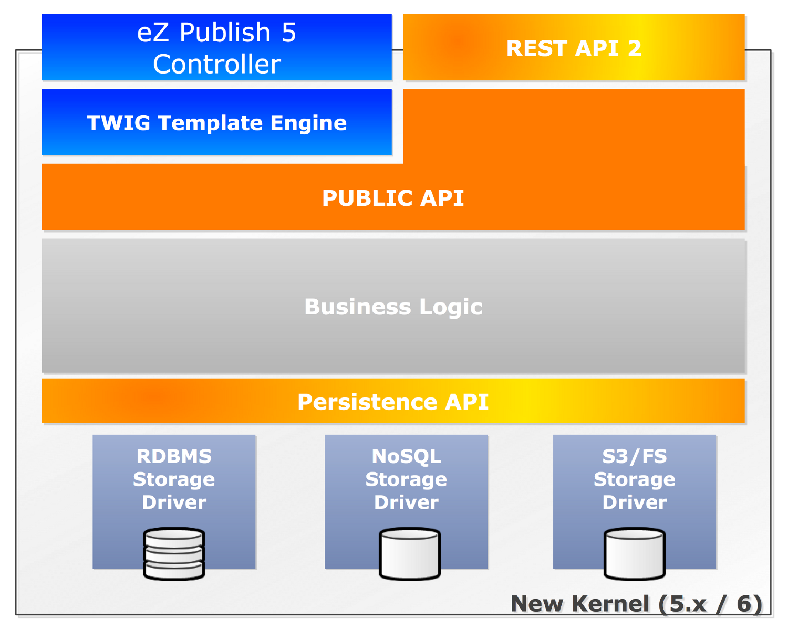

eZ Publish REST API
Available online at:
http://j.mp/ez-sc-2013-rest-api
Me
eZ Community member since 2005
Part of the eZ Engineering team since 2011
Lead engineer User Interface
at eZ
@dpobel
+Damien Pobel
Github
Linkedin
Blog

The end
?
eZ Publish REST API